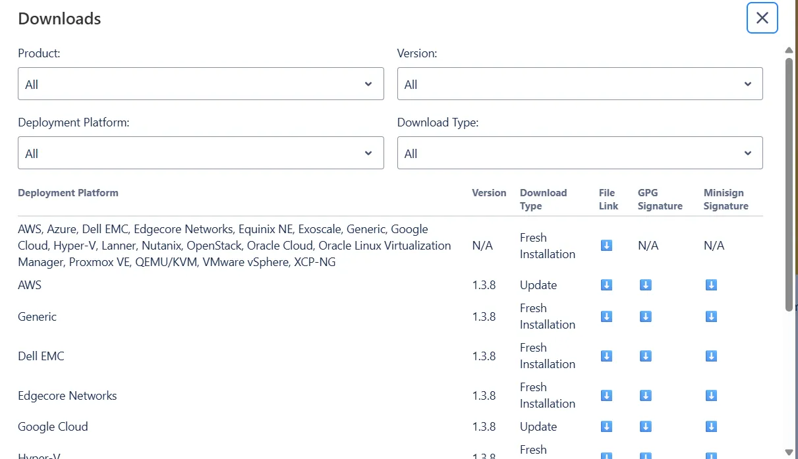

Installation
VyOS installation requires a VyOS .iso file. This file is a live installation image that you can use to boot a live VyOS system. From there, you can proceed with a permanent installation on a hard drive or other storage device.
Release Type |
Description |
Release Cycle |
Intended Use |
Access to Images |
Access to Source |
|---|---|---|---|---|---|
Nightly (Current) |
Automatically built from the |
Every night |
Developing VyOS, testing new features, experimenting. |
Everyone |
Everyone |
Stream |
VyOS Stream serves as a technology preview and a quality gate for the upcoming LTS release. Allows everyone to try new features and check if they work well or need improvements. |
Every quarter |
Non-critical production environments, preparing for the LTS release. |
Everyone |
Everyone |
Release Candidate |
Rather stable. All development focuses on testing and hunting down remaining bugs following the feature freeze. |
Irregularly until EPA comes out |
Labs, small offices and non-critical production systems backed by a high-availability setup. |
Everyone |
Everyone |
Early Production Access |
Highly stable with no known bugs. Needs to be tested repeatedly under different conditions before it can become the final release. |
Irregularly until LTS comes out |
Non-critical production environments, preparing for the LTS release. |
Everyone |
Everyone |
Long-Term Support |
Guaranteed to be stable and carefully maintained for several years after the release. No features are introduced but security updates are released in a timely manner. |
Every major version |
Large-scale enterprise networks, internet service providers, critical production environments that call for minimum downtime. |
Subscribers, contributors, non-profits, emergency services, academic institutions |
Subscribers, contributors, non-profits, emergency services, academic institutions |
Hardware requirements
The minimum system requirements for VyOS are 4 GB RAM and 10 GB storage. Depending on your use case, you might need additional RAM and CPU resources.
Download
Registered Subscribers
Registered subscribers can log into https://support.vyos.io/ to access a variety of different downloads via the “Downloads” link. These downloads include LTS (Long-Term Support), the associated hot-fix releases, early public access releases, pre-built VM images, as well as device specific installation ISOs.

Building from source
Subscribers can download the source code for the LTS release from the “Downloads” link. Non-subscribers can access the source code for the Rolling release. For instructions, see the Build VyOS section. The VyOS source code repository is available at https://github.com/vyos/vyos-build.
Rolling Release
Everyone can download bleeding-edge VyOS rolling images from: https://downloads.vyos.io/
Note
Rolling releases contain the latest enhancements and fixes. This means there may be new bugs. If you encounter a bug, follow the guide at Bug Report/Issue. We depend on your feedback to improve VyOS.
The following link contains the most recent VyOS builds for AMD64
systems from the rolling branch: https://vyos.net/get/nightly-builds/
Download Verification
LTS images are signed with the VyOS lead package maintainer’s private key. You can verify the authenticity of the package using the official public key and Minisign.
Minisign verification
VyOS signs its release images with minisign,
a portable Ed25519-based signing tool available for Linux, macOS, and Windows. Minisign uses the same signature format as OpenBSD’s signify, introduced in 2014.
All VyOS rolling (nightly) images are signed with the following key:
RWSIhkR/dkM2DSaBRniv/bbbAf8hmDqdbOEmgXkf1RxRoxzodgKcDyGq
This key is also published in the
repository.
To verify a downloaded rolling image, place the image and its .minisig
signature file in the same directory, and run:
$ minisign -V -P RWSIhkR/dkM2DSaBRniv/bbbAf8hmDqdbOEmgXkf1RxRoxzodgKcDyGq -m vyos-1.x-rolling-YYYYMMDDHHMM-generic-amd64.iso
Signature and comment signature verified
Trusted comment: timestamp:<unix_ts> file:vyos-1.x-rolling-YYYYMMDDHHMM-generic-amd64.iso hashed
Note
LTS release images are signed with a different key. If you are verifying an LTS image, see the Minisign verification section in the LTS installation documentation for the correct key and example.
When you upgrade using add system image, VyOS verifies the downloaded
image’s minisign signature before installation, using the signing keys
installed on the system. The release signing key, which signs LTS images,
is present on every system, but the rolling signing key, which signs
rolling images, was added only in VyOS 1.4. A pre-1.4 system therefore
cannot verify a rolling image.
To add the rolling signing key to such systems, upgrade them to LTS version 1.4 or later, and then proceed with installing a recent rolling image.
Live installation
Note
To permanently install VyOS, you must first complete a live installation.
You can test VyOS without installing it on your hard drive. Using your downloaded VyOS .iso file, you can create a bootable USB drive to boot into a fully functional VyOS system. After testing it, you can start a Permanent installation on your hard drive or power off your system and remove the USB drive.
If you have a GNU/Linux system, you can create a bootable VyOS USB drive using
the dd command:
Open your terminal emulator.
Find the device name of your USB drive (use the
lsblkcommand).Unmount the USB drive. Replace
Xwith your device letter and keep the asterisk (*) to unmount all partitions.$ umount /dev/sdX*
Write the image (your VyOS .iso file) to the USB drive. Use the device name (for example,
/dev/sdb), not the partition name (for example,/dev/sdb1).Warning: This will destroy all data on the USB drive!
# dd if=/path/to/vyos.iso of=/dev/sdX bs=8M; sync
Wait for the operation to complete (bytes copied). On some systems, this may take more than one minute.
Once
ddhas finished, pull the USB drive out and plug it into the powered-off computer where you want to install (or test) VyOS.Power on the computer and ensure it boots from the USB drive (you may need to select the boot device or change boot settings).
When VyOS finishes loading, sign in using the default credentials (login:
vyos, password:vyos).
If you encounter issues with this method, prefer a different operating
system, or want a GUI program, you can use other tools to create a
bootable USB drive, such as balenaEtcher (GNU/Linux, macOS, and Windows),
Rufus (Windows), and many others. Follow their instructions to create
a bootable USB drive from an .iso file.
Hint
The default username and password for the live system is vyos.
Permanent installation
Note
Before a permanent installation, VyOS requires a Live installation.
Unlike general-purpose Linux distributions, VyOS uses “image installation”, which mimics the user experience of traditional hardware routers and allows you to keep multiple VyOS versions installed simultaneously. This lets you switch to a previous version if something breaks or misbehaves after an image upgrade.
Each version is contained in its own squashfs image mounted in a union filesystem along with a directory for mutable data such as configurations, keys, and custom scripts.
In order to proceed with a permanent installation:
Sign in to the VyOS live system using the default credentials (login:
vyos, password:vyos).Run the
install imagecommand and follow the wizard:vyos@vyos:~$ install image Welcome to VyOS installation! This command will install VyOS to your permanent storage. Would you like to continue? [y/N] y What would you like to name this image? (Default: 2025.09.17-0018-rolling) Please enter a password for the "vyos" user: Please confirm password for the "vyos" user: What console should be used by default? (K: KVM, S: Serial)? (Default: S) Probing disks 1 disk(s) found The following disks were found: Drive: /dev/vda (10.0 GB) Which one should be used for installation? (Default: /dev/vda) Installation will delete all data on the drive. Continue? [y/N] y Searching for data from previous installations No previous installation found Would you like to use all the free space on the drive? [Y/n] Y Creating partition table... The following config files are available for boot: 1: /opt/vyatta/etc/config/config.boot 2: /opt/vyatta/etc/config.boot.default Which file would you like as boot config? (Default: 1) Creating temporary directories Mounting new partitions Creating a configuration file Copying system image files Installing GRUB configuration files Installing GRUB to the drive Cleaning up Unmounting target filesystems Removing temporary files The image installed successfully; please reboot now.
After installation completes, remove the live USB drive or CD.
Reboot the system.
vyos@vyos:~$ reboot Proceed with reboot? (Yes/No) [No] YesYou will boot now into a permanent VyOS system.
PXE Boot
You can also install VyOS using PXE, a more complex installation method that allows you to deploy VyOS over the network.
Requirements
A machine (client) with a PXE-enabled NIC.
Webserver (HTTP). Optional, but speeds up installation.
VyOS ISO image (do not use images prior to VyOS
1.2.3).Files pxelinux.0 and ldlinux.c32 from the Syslinux distribution.
Configuration
Step 1: DHCP
Configure a DHCP server to provide the client with:
An IP address
The TFTP server address (DHCP option 66), sometimes referred to as the boot server
The bootfile name (DHCP option 67): pxelinux.0
In this example we configured an existent VyOS as the DHCP server:
vyos@vyos# show service dhcp-server
shared-network-name mydhcp {
subnet 192.168.1.0/24 {
option {
bootfile-name pxelinux.0
bootfile-server 192.168.1.50
default-router 192.168.1.50
}
range 0 {
start 192.168.1.70
stop 192.168.1.100
}
subnet-id 1
}
}
Step 2: TFTP
Configure a TFTP server to serve the following:
The pxelinux.0 file from the Syslinux distribution
The ldlinux.c32 file from the Syslinux distribution
The VyOS kernel you want to deploy (vmlinuz file from the /live directory in the extracted ISO file)
The VyOS initial ramdisk (initrd.img file from the /live directory in the extracted ISO file). Do not use an empty (0 bytes) initrd.img file; the correct file may have a longer name.
A directory named pxelinux.cfg containing the configuration file. By default, the VyOS configuration file is named default.
In the example you configured your existent VyOS as the TFTP server too:
vyos@vyos# show service tftp-server
directory /config/tftpboot
listen-address 192.168.1.50
Example of the contents of the TFTP server:
vyos@vyos# ls -hal /config/tftpboot/
total 29M
drwxr-sr-x 3 tftp tftp 4.0K Oct 14 00:23 .
drwxrwsr-x 9 root vyattacfg 4.0K Oct 18 00:05 ..
-r--r--r-- 1 root vyattacfg 25M Oct 13 23:24 initrd.img-4.19.54-amd64-vyos
-rwxr-xr-x 1 root vyattacfg 120K Oct 13 23:44 ldlinux.c32
-rw-r--r-- 1 root vyattacfg 46K Oct 13 23:24 pxelinux.0
drwxr-xr-x 2 root vyattacfg 4.0K Oct 14 01:10 pxelinux.cfg
-r--r--r-- 1 root vyattacfg 3.7M Oct 13 23:24 vmlinuz
vyos@vyos# ls -hal /config/tftpboot/pxelinux.cfg
total 12K
drwxr-xr-x 2 root vyattacfg 4.0K Oct 14 01:10 .
drwxr-sr-x 3 tftp tftp 4.0K Oct 14 00:23 ..
-rw-r--r-- 1 root root 191 Oct 14 01:10 default
Example of simple (no menu) configuration file:
vyos@vyos# cat /config/tftpboot/pxelinux.cfg/default
DEFAULT VyOS123
LABEL VyOS123
KERNEL vmlinuz
APPEND initrd=initrd.img-4.19.54-amd64-vyos boot=live nopersistence noautologin nonetworking fetch=http://address:8000/filesystem.squashfs
Step 3: HTTP
You also need to provide the filesystem.squashfs file. Because this is a large file and TFTP is slow, you can send it through HTTP to speed up the transfer. In our example, we do this—see the configuration file above.
Start a web server. You can use one like Python’s SimpleHTTPServer to serve the
filesystem.squashfsfile. The file is in the/livedirectory of the extracted ISO file.Edit the Step 2: TFTP configuration file to show the correct URL:
fetch=http://<address_of_your_HTTP_server>/filesystem.squashfs.
Note
Do not rename the filesystem.squashfs file. If you’re working with different versions, create different directories instead.
restart the TFTP service. If you’re using VyOS as your TFTP server, restart the service with
sudo service tftpd-hpa restart.
Note
Ensure the directories and files on both the TFTP and HTTP servers have the correct permissions for the booting clients to access them.
Client Boot
Finally, power on your PXE-enabled clients. They will automatically receive an IP address from the DHCP server and boot into VyOS live using files from the TFTP and HTTP servers.
Once finished you will be able to proceed with the install image
command as in a regular VyOS installation.
Known Issues
This is a list of known issues that can arise during installation.
Black screen on install
GRUB redirects all output to a serial port to facilitate installation
on headless hosts. On some hardware that lacks a serial port, this causes
a hard lockup and displays a black screen after you select the
Live system option from the installation image.
The workaround is to press e when the boot menu appears and edit the
GRUB boot options. Specifically, remove the:
console=ttyS0,115200
option, and type CTRL-X to boot.
Installation can then continue as outlined above.